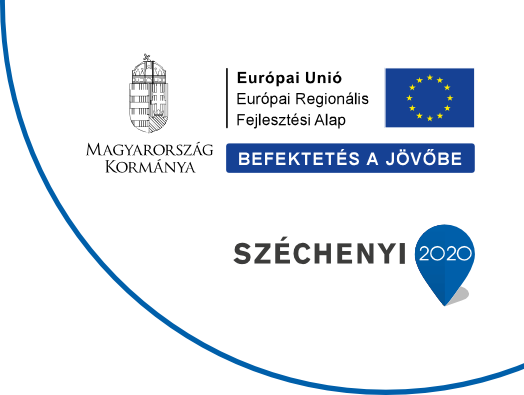

Investitionen in unsere Zukunft.
Die geförderten Projekte von Bridge Dental: moderne Fertigung, technologische Entwicklung und zeitgemäße Fachkommunikation.

Stärkung der Innovationsfähigkeit von Bridge Dental
Das Projekt wird mit Unterstützung der Europäischen Union und Kofinanzierung durch den ungarischen Staat umgesetzt.
- Förderempfänger
- Bridge Dental Korlátolt Felelősségű Társaság
- Vertragsnummer
- GINOP_PLUSZ-2.1.3-24-2025-01534
- Förderbetrag
- 49 999 499 Ft
- Förderquote
- 69,999999%
- Gesamtkosten
- 71 427 857 Ft
- Projektbeginn
- 2026.01.01.
- Frist für den physischen Projektabschluss
- 2027.06.30.
Digitale Fertigung und Weiterentwicklung des Marketings
Die Investition unterstützt die schnellere und präzisere Herstellung von Zahnersatz und stärkt unsere verlässliche Laborleistung auf Premiumniveau.
Bei einzelnen Arbeitsschritten war bislang die Einbindung externer Dienstleister erforderlich. Der Hin- und Rücktransport der Modelle konnte die Fertigung um 3–5 Arbeitstage verlängern. Das Projekt soll diese zusätzlichen Laufzeiten reduzieren und die Lieferplanung verlässlicher machen.
Was setzen wir um?
Im Mittelpunkt steht die Einführung dentaler 3D-Drucktechnologie mit den Geräten Stratasys J3 und J5 DentaJet. Wichtige Arbeitsschritte können dadurch im eigenen Labor erfolgen:
- geringere Abhängigkeit von externen Dienstleistern;
- kürzere Durchlaufzeiten durch den Wegfall der bisherigen zusätzlichen 3–5 Arbeitstage;
- höhere Präzision und Wiederholbarkeit in der Fertigung;
- weniger Fehlerquellen und Ausschuss;
- flexiblere Kapazitäts- und Terminplanung.
Gezieltere Kommunikation im In- und Ausland
Die zweite Säule ist die Weiterentwicklung unseres Marketings: eine benutzerfreundliche, informative und suchmaschinenoptimierte Website, Fachbeiträge, regelmäßige Social-Media-Kommunikation, Google-Ads- und Meta-Kampagnen – insbesondere für Deutschland und Österreich – sowie ein Newsletter-System für unsere Partner.
Was bedeutet das für unsere Partner?
Schnelligkeit, Präzision, Verlässlichkeit und Premiumqualität: mit planbaren Durchlaufzeiten, moderner Technologie und konsequenter fachlicher Kommunikation.
Original-Projektinformation herunterladen (PDF, Ungarisch)
Technische Modernisierung der Bridge Dental Kft.
Originaltitel: „A Bridge Dental Kft technikai megújulása”. Das Projekt wurde aus dem Europäischen Fonds für regionale Entwicklung und ungarischen Haushaltsmitteln in Form einer bedingt rückzahlbaren Förderung finanziert.
- Projektkennzeichen
- VEKOP-1.2.6-20-2020-00559
- Förderbetrag
- 18 500 000 Ft
- Förderquote
- 70%
- Tatsächlicher Projektabschluss
- 2020.12.31.
Im Rahmen des Projekts in Betrieb genommene Geräte
- Mestra Autopol Geisser Polymerisationsgerät – 1 Stück
- Ivoclar Keramiköfen – 4 Stück
- M-82 spec. Metallarbeitsplätze für eine Person mit technischer Ausstattung – 3 Stück
- Ermetal M93 Doppelarbeitsplätze mit technischer Ausstattung – 6 Stück
- Marathon Multi 600 Mikromotoren – 15 Stück
- Marathon zahntechnische Wasser-Luft-Turbinen – 3 Stück
Durch die Umsetzung des Projekts konnten wir unsere Kapazitäten und unsere Produktivität steigern.